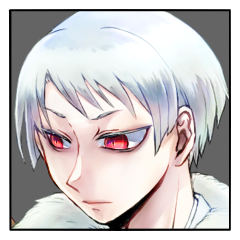
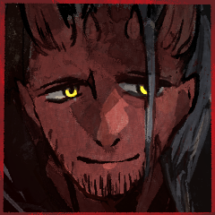
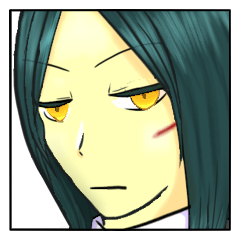

GM
アイコンの右にダイスを置いていただいて、
ついでにディスコード個人窓で申告をいただこうかな。
GM
プロットが完了したらメインでプロット完了の宣言をお願いします。
百々坂 瞠
プロット前忍法、【斎垣】を使用します。
百々坂 瞠
2D6>=5 （判定：罠術） (2D6>=5) ＞ 10[4,6] ＞ 10 ＞ 成功
GM
プロット５に斎垣が指定。
このプロットを宣言したキャラクターは１点の接近戦ダメージを受けます。
GM
ラウンド１のプロットオープン、お願いします！
[ 三榊 琴梨 ] がダイスシンボルを公開。出目は 4 です。
[ 爾甁粢 野葛 ] がダイスシンボルを公開。出目は 4 です。
[ 葦原 名張 ] がダイスシンボルを公開。出目は 6 です。
[ 百々坂 瞠 ] がダイスシンボルを公開。出目は 4 です。
GM
◆ラウンド１
プロット６：名張 ４：琴梨、野葛、瞠
GM
いいでしょう。コストとして生命力１点をお支払いですね。
判定をどうぞ。
[ 葦原 名張 ] 頑健 : 2 → 1
葦原 名張
2D6>=6 （判定：異形化） (2D6>=6) ＞ 12[6,6] ＞ 12 ＞ スペシャル(【生命力】1点か変調一つを回復)
GM
……消費してから判定の流れかな。これで１点回復が入ります。
爾甁粢 野葛
では神器の力を使用します。各ラウンド1回限定の遁甲符の力。
葦原 名張
2D6>=6 （判定：異形化） (2D6>=6) ＞ 6[3,3] ＞ 6 ＞ 成功
爾甁粢 野葛
その動きの先を遮るように、『八千矛』に向けて矢が放たれた。

爾甁粢 野葛
「……どうやら、この『神器』には因果を覆す力があるようだ。
果たして、必ずしも結末までも覆るとは限らないようだが……」
爾甁粢 野葛
「…罠を敷き、獲物の足を挫くは狩人の得手。」
爾甁粢 野葛
「そのニヤけた顔を、何度でも転がしてやろう。」
葦原 名張
2D6>=7 （判定：異形化） (2D6>=7) ＞ 10[4,6] ＞ 10 ＞ 成功
GM
成功ですね。
以降、名張の接近戦の攻撃忍法の間合いが＋１されます。
GM
まだ手番の行動は済んでいませんね。続けてどうぞ。
[ 葦原 名張 ] 頑健 : 1 → 0
葦原 名張
2D6>=7 （判定：異形化） (2D6>=7) ＞ 5[1,4] ＞ 5 ＞ 失敗
葦原 名張
ごく自然な、まるでそうあるのが当たり前かのように、背負った大太刀をぬるりと抜く。
葦原 名張
月光にぎらつく刃へと指を添え、血を捧げるように走らせる。
葦原 名張
完全に先手を取ったはずのその動きを見越したかのような狩人の一矢が頬をかすめる。
葦原 名張
次の一手から逃れるように、大きな体を後ろへと二転三転と弧を描いて身を躱す。
葦原 名張
持ち主の血を吸った大太刀は、元々長大な刃がさらに伸長したように血で覆われていた。
爾甁粢 野葛
「…意外に小回りの利く奴だ。
猪のような男と思ったが、鼬と呼ぶ方が相応しいかも知れんな。」
爾甁粢 野葛
「全くだ。そんな鼬が居るのなら、それは化生の類だろう。」
爾甁粢 野葛
「里を脅かす化物は退治せねばなるまいな。」
葦原 名張
「化生ねぇ。そこに関しちゃあまり否定できねぇなぁ。ま、退治奇譚なんて人間の御話だが」
GM
３人いるので、全員に1D100を振っていただきましょう。
目の低い順から行動を処理します。
爾甁粢 野葛
1D100 (1D100) ＞ 74
百々坂 瞠
2D6>=5 （判定：罠術）禁術 (2D6>=5) ＞ 9[3,6] ＞ 9 ＞ 成功
GM
畏まりました。
こちらの適用はプロット処理のタイミングと致します。
次の琴梨さんの行動の黄泉軍にはかかりません。
GM
手番の行動はまだ残っていますね、続けてどうぞ。
百々坂 瞠
■奥義
《闘術「百漣朧」》
指定特技 ：骨法術
エフェクト：範囲攻撃/撃ち+くらまし/人数制限+射程低下
効果・演出：ただ単純な格闘術。
柔軟で機敏な肉体によって高められ、漣の如く押し寄せる連続性と忍びの目にさえ追えぬ朧の速度を得て、それは奥義の域へ至った。
GM
了解しました。
二人は任意の分野３点にダメージを受けます。
GM
もうちょっと詳しく解説すると
任意の分野２点を減少＋撃ちによる射撃戦ダメージ１点 です。
コレガタダシイ。
三榊 琴梨
なるほど！！ありがとうございます！
少々お待ちください
GM
了解しました。
では名張さんと琴梨さんは喪失する分野３つの宣言をお願いします。
GM
宣言だけしてもらう感じで。
実際の喪失はプロット４の処理が終わるタイミングでまとめて行います。
[ 三榊 琴梨 ] 器術 : 1 → 0
[ 三榊 琴梨 ] 忍術 : 1 → 0
[ 三榊 琴梨 ] 戦術 : 1 → 0
[ 三榊 琴梨 ] 器術 : 0 → 1
[ 三榊 琴梨 ] 忍術 : 0 → 1
[ 三榊 琴梨 ] 戦術 : 0 → 1
GM
ではRPを頂きましょうか。よろしくお願いします！
百々坂 瞠
比良坂の術印を結んだ指が静かに解かれて。
それを合図に、忍びの音速にあったその身が一瞬のうちに白無垢へと肉薄する。
百々坂 瞠
正拳、膝、もう片腕をもって掌打。
流れるような動作で各部位を叩き込んで最後に一蹴。
それは技の数々を教え込んだ琴梨にすら一度も見せたことのない、自らの秘奥としての流れ。
百々坂 瞠
その勢いでもって血色の大刀を構えた偉丈夫へと俄に距離を詰め、
あの祭壇での一撃にも勝るとも劣らぬ手刀の連続を見舞う。
三榊 琴梨
――速い。
その身のこなしは琴梨の知る百々坂、いや、そのひと以上か。
反応が遅れる。致命打は防ぐが、それでも重い。
葦原 名張
術印から放たれるのは派手で強大な術の類ではなく、鍛錬と修練に裏打ちされた純粋な体術。
その速さだけでなく的確に急所を狙う正確性が練度となって現れる。
葦原 名張
体勢を崩していることを差し引いても初見で対応できるものではない。
葦原 名張
僅かな判断でより危険な攻撃のみを防ぐ。
するどい手刀は身を刻み、その刃を血に染めた。
爾甁粢 野葛
「…ふん。
腐っても比良坂か。大した体術だ。」
流れるような体技を眺めつ、そう呟く。
爾甁粢 野葛
「今のは悪くない働きだ。奴らの足が止まった。」
爾甁粢 野葛
■奥義
《燎原の試練》
指定特技 ：見敵術
エフェクト：範囲攻撃/撃ち・くらまし/人数限定・射程低下
爾甁粢 野葛
対象は琴梨さん、名張さんのお二人で。
GM
これも二人に任意の分野２点を減少＋撃ちによる射撃戦ダメージ１点ですね。
GM
了解しました。
こちらも奥義情報の開示をお願いします。
三榊 琴梨
■奥義
《祝詞『須勢理毘売命』》
指定特技 ：呪術
エフェクト：絶対防御／くらまし／防御低下
効果・演出：あなたを言祝ぐその言葉。
GM
では名張は残りの３点の生命力を失います。
こちらもプロット４データ処理のタイミングで行います。
爾甁粢 野葛
囲い込まれ、辱めを受ける日々の中にあっても……
我々は備えを怠ることは無かった。
爾甁粢 野葛
それも、50年や100年の話ではない。
僅かな物資を密かに蓄え、隠し続けながら……
爾甁粢 野葛
糸、木材、油や食料、家屋に埋まる土に至るまで――
爾甁粢 野葛
幾千年の時に渡り、その望みを繋ぎ続けて来た。
爾甁粢 野葛
「これよりお前たちが相対するのは、堅洲の里の"願い"そのもの。
殺戮を撒き散らす狼藉者どもを誅する、"呪い"と"希望"の力だ。」
爾甁粢 野葛
その弓を、己が後方に向けて。
タタンッと弦を弾く音が二つ。
淀み無い動きで、後背の地面に向けて矢を射ち込んだ。
爾甁粢 野葛
それと同時に、『八千矛』と『姫君』の四方から
粘る油を伴いながら、凄まじい勢いで火柱が噴き出した！
爾甁粢 野葛
「古書に曰く――
野に出た八千矛は須佐之男の放った火に囲まれ、危機に陥るも
鼠の助けを得て、迫る炎から逃げ果せたと言う。」
爾甁粢 野葛
「しかし、今やここは鼠一匹とて存在を許されぬ儀式の異界。
その身を助ける者など…存在しない。」
爾甁粢 野葛
天地を焼き焦がす業火が『八千矛』と『姫君』に迫り来る――
三榊 琴梨
火勢に隔たれる。
まじなう言葉が届かない。
届けたいのは、あなたなのに。
葦原 名張
放たれた矢から燃え上がる炎の向こうより響く『八千矛』の声。
三榊 琴梨
聞こえたのは、『八千矛』のそれ。
ぐ、と気を引き締め直す。
信じると決めたのは誰だ。
葦原 名張
琴梨へと放った言葉は、しかしこのままではただの強がりに過ぎない。
燃える炎は体から流れる血をより紅く朱く染めてゆく。
葦原 名張
舌打ち。
右手をそのまま己の懐へと差し込み――
爾甁粢 野葛
「今この時に至るまで、
俺が祭壇に近付こうとしなかった理由を考えるべきだったな。」
爾甁粢 野葛
「この場所は、お前を焼き滅ぼすための死地だ。
いかに逃げ回ろうと、俺の目から逃げ果せるなど出来はしない。」
GM
黄泉軍への禁術はまだ発動していないものとします。
GM
入れても４でファンブルではありますが、判定をどうぞ。
三榊 琴梨
2D6+1>=5 （判定：傀儡の術） (2D6+1>=5) ＞ 5[1,4]+1 ＞ 6 ＞ 成功
百々坂 瞠
感情修正は…ないかな 回避を振りますね。
百々坂 瞠
2D6>=7 （判定：遊芸） (2D6>=7) ＞ 10[5,5] ＞ 10 ＞ 成功
百々坂 瞠
微かに弧を描いた口元は、向けられた賛辞に応じたようだった。
それがどちらのものへなのかなど考える前に、
閃光と劫火がその姿を隠し。
百々坂 瞠
その影は視界を埋め尽くす紅の中を、
恐れもなく舞うように縫ってゆく。
三榊 琴梨
赤に紛れるその姿から、どんどん面影が薄れてゆく。
『生弓矢』の器を追えない――ならば。
三榊 琴梨
2D6-1>=5 （判定：罠術） (2D6-1>=5) ＞ 4[1,3]-1 ＞ 3 ＞ 失敗
三榊 琴梨
火が、牙を向く。
まるで地獄のような業火。
巡らせる呪いも、掻き消される。
爾甁粢 野葛
「炎に追い立てられてもなお、立ち続けるつもりか……」
三榊 琴梨
熱が肌を裂く。喉が焼ける。黒煙が灰を侵す。
それでもなお、折れることなく立っている。
爾甁粢 野葛
「だが、『姫君』よ。
この女の拳を受けて、お前の動きが精彩を欠いたぞ。
迷いが生じたのならば…すぐにでも舞台を降りて構わないぞ？ 大きな怪我を負わぬ内にな。」
三榊 琴梨
「わたくしは『姫君』の御役目を全うする、と」
爾甁粢 野葛
「…相変わらず、温情を理解できない娘だ。
ならば、俺も手を緩めるつもりは無い。」
[ 三榊 琴梨 ] 器術 : 1 → 0
[ 三榊 琴梨 ] 忍術 : 1 → 0
[ 三榊 琴梨 ] 戦術 : 1 → 0
葦原 名張
＊喪失前に兵糧丸を使用して頑健分の生命力を回復します
[ 葦原 名張 ] 頑健 : 0 → 1
GM
では頑健の生命力１点と、忍術、戦術、謀術と、あと２分野ですね。
[ 葦原 名張 ] 器術 : 1 → 0
[ 葦原 名張 ] 忍術 : 1 → 0
[ 葦原 名張 ] 謀術 : 1 → 0
[ 葦原 名張 ] 戦術 : 1 → 0
[ 葦原 名張 ] 妖術 : 1 → 0
[ 葦原 名張 ] 頑健 : 1 → 0
[ 葦原 名張 ] 謀術 : 1 → 0
[ 葦原 名張 ] 戦術 : 1 → 0
[ 葦原 名張 ] 忍具 : 2 → 1
葦原 名張
■奥義
《魔血《血装鬼》》
指定特技 ：仕込み
エフェクト：不死身/目覚め/回数制限
葦原 名張
1d6-1 (1D6-1) ＞ 1[1]-1 ＞ 0
GM
……回復量はゼロですね。目覚めの発動もありません。
葦原 名張
術により展開された炎のその向こうに、赤黒い塊がうずくまっている。
葦原 名張
まるで体表を血が覆い、そしてその鉄を炎が焦がしつくしたかのようなそれは。

葦原 名張
その肌はまるでおとぎ話に出てくる鬼のように赤い。
葦原 名張
額は角のように隆起し化生と言うべき異形の姿をとる。
葦原 名張
「ぶっつけで使うものではないなぁ、これは」
爾甁粢 野葛
「…幾千年の時を経て、この里に本物の"鬼"が降り立つことになるとはな。」
爾甁粢 野葛
「その様に身体が赤くては、どれだけ血が流れ出たかも把握が難しいな。
幾十も矢を射かけた後、骨の一つまで丹念に焼き焼き滅ぼしてくれよう。」
爾甁粢 野葛
聳え立つ赤い巨体から距離を取り、再び地を蹴って駆け出す。
GM
これにてラウンド１は終了。
ラウンド終末に使われる忍法などはありませんね。
[ GM ] ラウンド数 : 1 → 2
百々坂 瞠
2D6>=5 （判定：罠術）斎垣 (2D6>=5) ＞ 5[1,4] ＞ 5 ＞ 成功
[ 葦原 名張 ] がダイスシンボルを公開。出目は 5 です。
[ 爾甁粢 野葛 ] がダイスシンボルを公開。出目は 5 です。
[ 百々坂 瞠 ] がダイスシンボルを公開。出目は 3 です。
[ 三榊 琴梨 ] がダイスシンボルを公開。出目は 3 です。
GM
◆ラウンド２
プロット５：名張、野葛 ２：琴梨、瞠
爾甁粢 野葛
1D100 (1D100) ＞ 76
GM
そういえば琴梨さんの忍具減らし忘れてたのでここで減らしておきます
[ 三榊 琴梨 ] 忍具 : 2 → 1
爾甁粢 野葛
では、奥義を使用します。
対象は名張さんと、琴梨さんに
爾甁粢 野葛
■奥義
《燎原の試練》
指定特技 ：見敵術
エフェクト：範囲攻撃/撃ち・くらまし/人数限定・射程低下
GM
了解しました。
奥義破りは見敵術から-2です。
[ 三榊 琴梨 ] 忍具 : 1 → 2
GM
特に使っていなかったことに気付き直しています すみません
[ 葦原 名張 ] 忍具 : 1 → 0
[ 葦原 名張 ] 戦術 : 0 → 1
GM
はい、ではくらましと合わせて-2+1をつけて判定をどうぞ。
葦原 名張
2D6-2+1>=6 （判定：暗号術） (2D6-2+1>=6) ＞ 9[3,6]-2+1 ＞ 8 ＞ 成功
三榊 琴梨
赤、赤、赤。
その中に見えた赤はまた、別の。
三榊 琴梨
微かに、笑み。
それはきっと、どんなまじないよりも。
爾甁粢 野葛
弦を振り絞った弓を天に向けて、放ったのは四矢。
飛び去った矢は僅かの時を置いて二矢、続けて二矢が地に向かう。
バラバラに飛び去った矢を阻むことなど、容易なことでは無い筈であったが。
葦原 名張
黄色く光る瞳は炎の壁のその向こう、翻る白い華を見つける。
葦原 名張
そしてそのまま天高く放たれる矢へと向けられ。
葦原 名張
ずらり、血を纏った大太刀がその切っ先を幾倍の長さにも伸ばして空に一閃を描く。
爾甁粢 野葛
「…粗暴な動きだ。
まさに獣そのものと言った方が相応しいな。」
爾甁粢 野葛
「良いだろう。次はより繊細な技をくれてやる。
お前の大き過ぎる手には余るような物をな。」
葦原 名張
■奥義
《魔血《血装鬼》》
指定特技 ：仕込み
エフェクト：不死身/目覚め/回数制限
GM
了解です。
奥義破りの指定特技は仕込みですね。
葦原 名張
1d6-2 (1D6-2) ＞ 1[1]-2 ＞ -1
GM
……回復量はゼロで、目覚めの発動もありませんね。
葦原 名張
2D6>=5 （判定：骨法術） (2D6>=5) ＞ 10[4,6] ＞ 10 ＞ 成功
GM
このままもう一回、任意の特技での判定をどうぞ。
葦原 名張
2D6>=5 （判定：砲術） (2D6>=5) ＞ 5[2,3] ＞ 5 ＞ 成功
葦原 名張
2D6>=5 （判定：砲術） (2D6>=5) ＞ 9[3,6] ＞ 9 ＞ 成功
百々坂 瞠
2D6>=5 （判定：砲術） (2D6>=5) ＞ 8[4,4] ＞ 8 ＞ 成功
葦原 名張
大太刀を握る手に力を込める。
儀式に向けて鍛えたその力を振るう先を求め。
葦原 名張
その刃を、目の前の『八十神』ではなく炎の壁のその向こうへと振るう。
葦原 名張
すぐさま振るう二刀目の切っ先は、矢を落としたときのようにより長く。

百々坂 瞠
煙よりなお高く立ち上り明け前の空を薙いだ摩天の刀を、もう一対の輝く双眸は見上げ。
百々坂 瞠
下ろされたその袂へ向けられた視線が、もう一つの黄金とかち合う。
音よりも早く、その光で意図を理解し。
百々坂 瞠
即座に抜かれた焔に鈍く光る黒鉄が立てる間髪すら挟めぬ号砲の、着弾とともに轟音。
隠されたいくつもの油溜めが爆発とともに煙を上げ、女の姿はその中へ消える。
百々坂 瞠
閃光と煙の中で辛くも事なきを得て、黄金はまだ追っている。
戦場を隔てる赤熱よりもなお赫き鬼の行方を。
葦原 名張
その動きを踊る炎のその向こうから垣間見る。
GM
ではシノビガミセッション『神楽八十神追』第九回はこれにて終了。
GM
次回は一日の休みを挟んだ18日、金曜日です。よろしくお願いします。